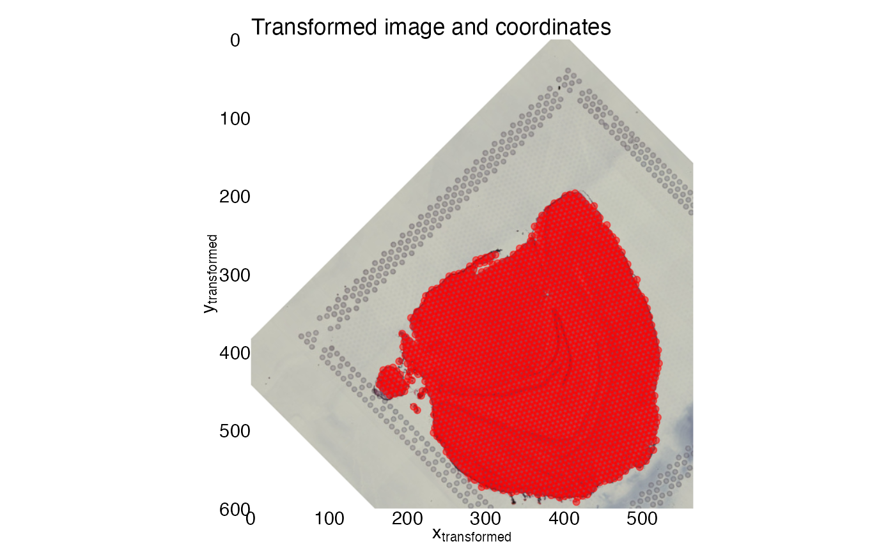
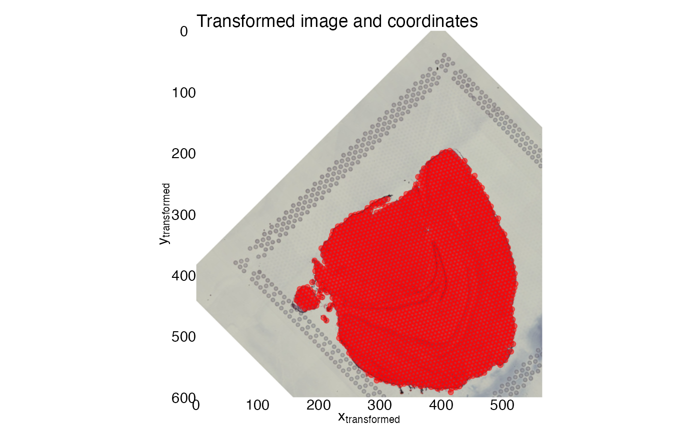

Apply transformation to paired image and coordinates
CoordAndImageTransform.RdSRT data generated with Visium consists of an H&E image and a gene expression matrix. The columns of the gene expression matrix correspond to spots that can be mapped to the H&E image using a set of pixel coordinates. This function takes an image and its corresponding set of spot coordinates as input and applies the same transformation to the image and spot coordinates simultaneously.
Usage
CoordAndImageTransform(
im,
xy_coords,
mirror_x = FALSE,
mirror_y = FALSE,
angle = 0,
scalefactor = 1,
imcenter = NULL,
xy_offset_image = c(0, 0),
xy_offset_spots = NULL
)Arguments
- im
Image of class
magick-image,StoredSpatialImage,rasteror a path to an external image file.- xy_coords
A
matrix,data.frameortibbleobject with numeric x, y coordinates.- mirror_x, mirror_y
Logical specifying if the image and spots should be mirrored along the x- and/or y-axis
- angle
Numeric value specifying the degree of rotation. Use negative angles for counter-clockwise rotation. The value needs to be in the range (-360, 360)
- scalefactor
A numeric value specifying a scaling factor between (0, 3)
- imcenter
A numeric vector of length 2 specifying the image center. Not required if the spot coordinates are already aligned to the H&E image.
- xy_offset_image
A numeric vector of length 2 specifying the translations along the x-a dn y-axes for the image
- xy_offset_spots
A numeric vector of length 2 specifying the translations along the x- and y-axes for the spots. If
xy_offset_imageisNULL,xy_offset_spotswill be set toxy_offset_imageas it is assumed that the spots are matched with the image.
Value
A list with two elements:
"im_transf": An object of class
magick-imagerepresenting the transformed image"xy_transf": An object of class
tblrepresenting the transformed coordinates
Details
Mirroring is prioritized and will be applied to the image before applying rotations and translations.
See also
Other transforms:
CoordMirror(),
CoordTransform(),
ImageTranslate(),
RigidTransformImages(),
RunAlignment()
Examples
library(semla)
library(ggplot2)
library(patchwork)
library(magick)
#> Linking to ImageMagick 6.9.12.93
#> Enabled features: cairo, fontconfig, freetype, heic, lcms, pango, raw, rsvg, webp
#> Disabled features: fftw, ghostscript, x11
library(dplyr)
# get example coordinate file
coordinatefile <- system.file("extdata",
"mousebrain/spatial/tissue_positions_list.csv",
package = "semla")
# Load coordinates
xy <- LoadSpatialCoordinates(coordinatefiles = coordinatefile)
#> ℹ Loading coordinates:
#> → Finished loading coordinates for sample 1
#> ℹ Collected coordinates for 2560 spots.
xy
#> # A tibble: 2,560 × 7
#> barcode selected y x pxl_row_in_fullres pxl_col_in_fullres sampleID
#> <chr> <int> <int> <int> <int> <int> <int>
#> 1 CATACAAA… 1 13 35 4117 6086 1
#> 2 CTGAGCAA… 1 15 25 4472 5062 1
#> 3 GGGTACCC… 1 14 26 4294 5164 1
#> 4 ACGGAATT… 1 15 27 4472 5266 1
#> 5 GGGCGGTC… 1 14 28 4294 5369 1
#> 6 ATGTTACG… 1 15 29 4472 5471 1
#> 7 AACCATGG… 1 14 30 4294 5574 1
#> 8 TCGCATCC… 1 15 31 4473 5676 1
#> 9 ACTTAGTA… 1 14 32 4295 5778 1
#> 10 GAGCTCTC… 1 15 33 4473 5881 1
#> # ℹ 2,550 more rows
# Load image
lowresimagefile <- system.file("extdata/mousebrain/spatial",
"tissue_lowres_image.jpg",
package = "semla")
im <- image_read(lowresimagefile)
# read scalefactors
scalefactorfile <- system.file("extdata/mousebrain/spatial",
"scalefactors_json.json",
package = "semla")
scalefactors <- jsonlite::read_json(scalefactorfile)
scalefactors
#> $spot_diameter_fullres
#> [1] 143.3171
#>
#> $tissue_hires_scalef
#> [1] 0.1039393
#>
#> $fiducial_diameter_fullres
#> [1] 214.9757
#>
#> $tissue_lowres_scalef
#> [1] 0.03118179
#>
# Convert coordinates using appropriate scalefactor, in this
# case the scalefactor for tissue_image_lowres
xy <- xy |>
mutate(across(pxl_col_in_fullres:pxl_row_in_fullres,
~ .x*scalefactors$tissue_lowres_scalef))
# Note that the y axis needs to be reversed and you need to
# specify the axis limits uisng the dimensions of the image
ggplot(xy, aes(pxl_col_in_fullres, pxl_row_in_fullres)) +
geom_point(color = "red", alpha = 0.5) +
scale_x_continuous(limits = c(0, image_info(im)$width), expand = c(0, 0)) +
scale_y_reverse(limits = c(image_info(im)$height, 0), expand = c(0, 0)) +
labs(x = expression("x"["original"]),
y = expression("y"["original"]),
title = "Original image and coordinates") +
theme_void() +
theme(axis.text = element_text(),
axis.title.x = element_text(),
axis.title.y = element_text(angle = 90)) +
coord_fixed() +
# Insert H&E image
inset_element(p = as.raster(im),
left = 0, bottom = 0,
right = 1, top = 1,
on_top = FALSE)
 # Select coordinates for transformation
xy_coords <- xy |>
select(pxl_col_in_fullres, pxl_row_in_fullres)
# Apply transformations
transf_res <- CoordAndImageTransform(im, xy_coords, angle = 45, xy_offset_image = c(100, 100))
# Add selected to transf_res$xy_transf
transf_res$xy_transf$selected <- xy$selected
# Note that the y axis needs to be reversed and you need to
# specify the axis limits uisng the dimensions of the image
ggplot(transf_res$xy_transf, aes(tr_x, tr_y)) +
geom_point(color = "red", alpha = 0.5) +
scale_x_continuous(limits = c(0, image_info(im)$width), expand = c(0, 0)) +
scale_y_reverse(limits = c(image_info(im)$height, 0), expand = c(0, 0)) +
labs(x = expression("x"["transformed"]),
y = expression("y"["transformed"]),
title = "Transformed image and coordinates") +
theme_void() +
theme(axis.text = element_text(),
axis.title.x = element_text(),
axis.title.y = element_text(angle = 90)) +
coord_fixed() +
# Insert H&E image
inset_element(p = as.raster(transf_res$im_transf),
left = 0, bottom = 0,
right = 1, top = 1,
on_top = FALSE)

# Select coordinates for transformation
xy_coords <- xy |>
select(pxl_col_in_fullres, pxl_row_in_fullres)
# Apply transformations
transf_res <- CoordAndImageTransform(im, xy_coords, angle = 45, xy_offset_image = c(100, 100))
# Add selected to transf_res$xy_transf
transf_res$xy_transf$selected <- xy$selected
# Note that the y axis needs to be reversed and you need to
# specify the axis limits uisng the dimensions of the image
ggplot(transf_res$xy_transf, aes(tr_x, tr_y)) +
geom_point(color = "red", alpha = 0.5) +
scale_x_continuous(limits = c(0, image_info(im)$width), expand = c(0, 0)) +
scale_y_reverse(limits = c(image_info(im)$height, 0), expand = c(0, 0)) +
labs(x = expression("x"["transformed"]),
y = expression("y"["transformed"]),
title = "Transformed image and coordinates") +
theme_void() +
theme(axis.text = element_text(),
axis.title.x = element_text(),
axis.title.y = element_text(angle = 90)) +
coord_fixed() +
# Insert H&E image
inset_element(p = as.raster(transf_res$im_transf),
left = 0, bottom = 0,
right = 1, top = 1,
on_top = FALSE)
